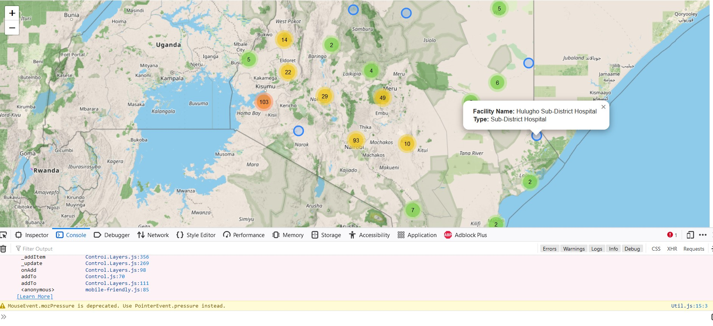
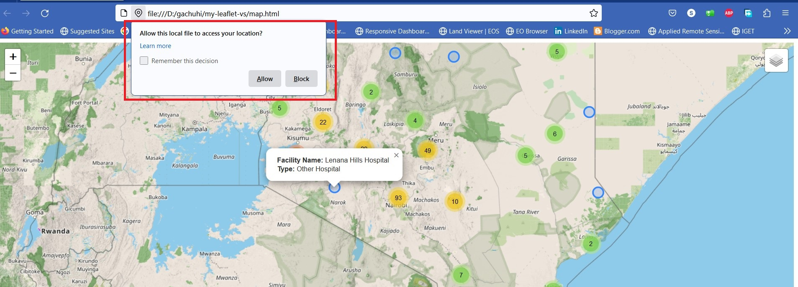
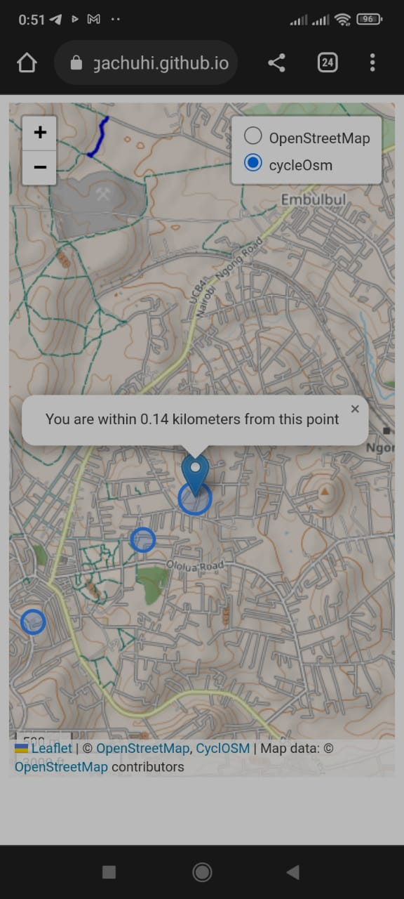

Chapter 11 Mobile Friendly Webapps
11.1 The need for mobile friendly web apps
Short story. Not too long ago I was the proud owner of a famous phone brand on the decline. One time, when taking a photo of the iconic Ngong Hills for Wikipedia’s Africa Climate photo contest, the phone just died. That was it. A quick visit to the authorized dealer was greeted with the unbelievable and bemusing words of, “We no longer ship the motherboard to the country anymore.” Some healing has taken place, but I was totally heartbroken, and occassionaly suffer some nostalgia of the ‘good times’ I had with my phone.
Now back to business. Webapps can be heavy, and they can load slowly on smaller devices such as smartphones. Apps that load slow can put off your web app users, so it is prudent to customize your webapp for your user’s phones.
For this chapter, we will work on making our cluster marker app mobile friendly. We shall also add other functionalities to make the web app heavier in order to test to destruction our ambitions in creating a mobile friendly app.
In order to create a mobile friendly Leaflet experience, insert the below code within the <head> element of your map.html. The below meta tag tells the browser to disable unwanted scaling of the page and instead set it to its actual size.
<meta name="viewport" content="width=device-width, initial-scale=1.0, maximum-scale=1.0, user-scalable=no" />
11.2 The basemaps
If you have gone through Chapter 8 where we created controls, the following will look familiar. We will add some basemaps and later on create their control widgets.
// Basemaps
var osm = L.tileLayer('https://tile.openstreetmap.org/{z}/{x}/{y}.png', {
maxZoom: 19,
attribution: '© <a href="http://www.openstreetmap.org/copyright">OpenStreetMap</a>'
});
var cyclOSM = L.tileLayer('https://{s}.tile-cyclosm.openstreetmap.fr/cyclosm/{z}/{x}/{y}.png', {
maxZoom: 20,
attribution: '<a href="https://github.com/cyclosm/cyclosm-cartocss-style/releases" title="CyclOSM - Open Bicycle render">CyclOSM</a> | Map data: © <a href="https://www.openstreetmap.org/copyright">OpenStreetMap</a> contributors'
}); // the CyclOSM tile layer available from Leaflet servers
Let’s add our basemaps to Leaflet.
// Add the Leaflet basemaps
var map = L.map('myMap', {
layers: [osm, cyclOSM]
}).setView([-1.295287148, 36.81984753], 7);
11.3 Adding the features
Remember our hospital json layer? Let’s call it again and transform it to a cluster marker with fetch.
// Add hospital dataset
url = 'https://raw.githubusercontent.com/sammigachuhi/geojson_files/main/selected_hospitals.json'
var cluster = fetch(url)
.then((response) =>{
return response.json()
})
.then((data) => {
var markers = L.markerClusterGroup();
var geojsonGroup = L.geoJSON(data, {
onEachFeature : function(feature, layer){
var popupContent = `<b>Facility Name:</b> ${feature.properties.Facility_N} <br>
<b>Type:</b> ${feature.properties.Type}`;
layer.bindPopup(popupContent)
},
pointToLayer: function (feature, latlng) {
return L.circleMarker(latlng);
}
});
markers.addLayer(geojsonGroup);
map.addLayer(markers);
})
.catch((error) => {
console.log(`This is the error: ${error}`)
})
Why was the fetch code being parsed to var cluster? Well, we were aiming for the stars. We wanted to have a layer control for our cluster variable too but unfortunately this plan failed.
Let’s put our basemaps and cluster variables into JavaScript objects in order to create a layer control for each.
// Set object for the basemaps
var basemaps = {
"OpenStreetMap": osm,
'cycleOsm': cyclOSM,
}
////Don't add the 'overlays' object. For demonstration purposes only
// Set object for the overlay maps
var overlays = {
'Hospitals': cluster
}Before you head on any further, inserting the overlays object into the L.control.layers() class results in several errors. This is why we were unable to create a control for the markers held in var cluster. The image below shows the errors appearing in the console after inserting the overlays object into L.control.layers().

To get rid of the error showcased above, just comment out the overlays object and remove it from L.control.layers(). The L.control.layers() class should only contain the basemap object.
11.4 Zooming to mobile user’s location
According to the Leaflet official documentation, Leaflet has a handy shortcut of zooming in to the user’s location. If for some reason it will not pinpoint your exact coordinates, it has the ability to geofence a user’s exact position.
// Zoom to your location
map.locate({setView: true, maxZoom: 16});
11.5 Add marker to mobile user’s geolocation
Even if the location is off by a couple of miles, at least a marker to show the triangulated position will help. At least you will not be all over the map! The following code adds a marker to the mobile user’s triangulated Latitude-Longitude coordinates, and displays a message showing the radius in which the mobile user is most likely to be found from the marker point.
// Add marker at your location
function onLocationFound(e) {
var radius = e.accuracy;
L.marker(e.latlng).addTo(map)
.bindPopup("You are within " + Number((radius/1000).toFixed(2)) + " kilometers from this point").openPopup();
L.circle(e.latlng, radius).addTo(map);
}
Incase you forgot, the on method adds listeners. As a gentle reminder, listeners are codes that run when an event, as simple as hovering or as intensive as double clicking are triggered. In the below code, the listener 'locationfound' triggers the onLocationFound function in case Leaflet successfully approximated the user’s location.
map.on('locationfound', onLocationFound);The locationfound listener is responsible for the message bounded in red below when a browser loads a Leaflet map. Clicking Allow will give the browser the heads up to zoom to my location as it best can.

What if, getting the mobile user’s geolocation is unsuccessful? We will create a function that outputs the error event to our console, as shown below.
// Error displayed after finding location failed
function onLocationError(e) {
alert(e.message);
}
Actually, message is an error event that displays the error message of a parameter. The message event is parsed to the onLocationError function. If the browser fails to approximate the user’s location, the onLocationError function returns ‘true’ which triggers an error alert on the browser.
map.on('locationerror', onLocationError);
11.6 The mobile webmap app in action!
Yours truly has saved you the hustle of detailing how this chapter’s files have been saved to Github and subsequently converted into a webpage. The key thing to note is that the HTML file has to be named as index.html and not map.html. Using the name index for your HTML is the easiest way to render your file on the fly in Github. Some additional steps exist to launch our Leaflet map to the global web but to ensure brevity in this chapter, we suggest you visit this authoritative Github page for further guidance. The link below should nevertheless allow you to view the webapp on your phone.
https://sammigachuhi.github.io/hospitals_webapp/

We had initially aimed for the stars by wanting to create a web app that could feature controls for the marker points in addition to the basemap layers. However, it seemed like we landed on the skies instead. Nevertheless, this looks like a good hospital locations app. The sky is only the baseline for what further features can be built on top of this app.
The full code script is available from here.
11.7 Summary
Enabling a Leaflet map to be mobile friendly allows the Leaflet map to load fast as well as scale efficiently on a smartphone. Here is what you’ve learnt.
A special
metatag is inserted in the<head>element of your HTML file to enable the browser scale smoothly when a user is viewing a Leaflet map on a smartphone.Leaflet has a special function, the
map.locatethat geolocates and zooms to the user’s exact coordinates. If not, it creates a geofence which is a radius of where they are most likely to be found.In case Leaflet is unable to approximate the user’s location, one can resort to the
messageevent which throws back an error on the user’s browser.